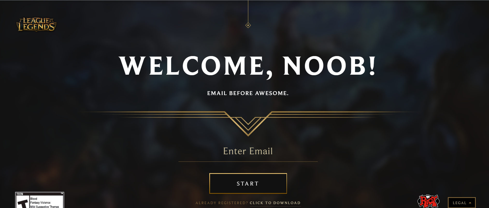

What Is League of Legends?
League of legends is in the game genre M.O.B.A. The M stands for Multiplayer, meaning that you will play with other players, in most cases games have 9 other players. O stands for online, which means that the other players can be anywhere on the internet. The B stands for battle, which denotes that it is an action game that focuses on real time battles rather than turn based combat or storytelling. Finally the A stands for Arena, which means that these battles will be contained within a virtual arena, usually this arena remains consistant from game to game. All together you have a Multiplayer Online Battle Arena, or Moba for short. League of Legends is by far the most popular Moba and even more than that, the most popular game currently on the market. The game was released October 27 2009 by Riot Games. Since its inception at Santa Monica, California, its popuarity has skyrocketed gaining both a massive local and global following. Riot has worked closely with the community throughout the years to nurture a competative environment and create several regional leagues. As of 2019 the North American and European leagues have been franchised, showing tremendous upward growth for the future of League. As such the game is now in a state where both novice and expert can meet, ineract, observe, and enjoy the game at any skill level.
Why Should I Play
As I mentioned briefly in the former paragraph, League of Legends is a game that can be enjoyed by anyone for many different reasons. But beyond being competatively enjoyable for any skill range, there are many benifits to playing the worlds biggest game. As the biggest game, it has the biggest community that goes with it, this leads to a massive amount of community driven content. Things ranging from websites like this one to local league school clubs. League has grown so big that it is almost impossible to outrun its influence and wouldn't you rather be in the know than an outsider looking in? A big reason for this massive amount of popularity is actually another reason to play. The game is completely free! All it takes is a working internet connection and you can download and play League of Legends completely for free. You unlock things through playing the game and there is an option to pay to expadite the process, along with the option to pay for cosmetic only items in game. Nothing you will buy will ever give you an in game advantage and is merely for conveniance or asthetics. More than any other reason, I believe you should give League a try because it is made by people who care about the game. The game has been constantly updated since it was released. Starting with a cast of 17 characters and expanding all the way to 143 characters. Along the way Riot has continuously kept an ear open to their community and listened to feedback to help improve their game and keep it fresh. The company is by no means perfect and has had its fair share of failures, but throughout its history you can see Riot Games cares about their game and their players.
How Do I Start?
Hurray!I convinced you, or maybe something else did. Either way I bet you are wondering how you start. Well first off, you need to sign up for a League of Legends Account. After you sign up for an account you have to download the game. A link should be provided after you sign up, but just in case I have provided a direct download link here. Once you have properly downloaded the patcher, you will be prompted to follow multiple steps to download the game and all of its many patches. This may take a long time depending on your internet speed so you may want to leave it to patch over night or while you work. Once you have finished patching you will now be able to login with the info you used while signing up earlier. Upon your first login, you will be asked to provide a summoner name. Now be careful, you only get one free name, you may change this screen name but it will come at a cost so its best to be prepared and think of a name you wouldnt mind assosiating with. After you choose your name thats it! You are now ready to start playing League of Legends. But this is just the beginning.
